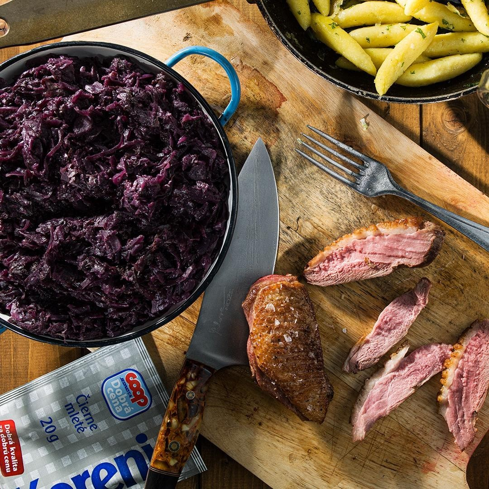

Zemiakové šúľance podľa @komora_coopjednota — Normy Jedál
Šťavnaté kačacie prsia + červená kapusta s jablkami + domáce zemiakové šúľance = kombinácia, ktorú sme si túto jeseň zamilovali. Recept nájdete na bit.ly/lahodne-kacacie-prsia. 👍⠀
#komoragazdin #recept #kacacie #hody #jesenna #pochutka #cervenakapusta #kapusta #domace #sulance #zemiakovesulance #jablko #tipnaobed #obed #peceniejeradost #jesen2020 #kacka